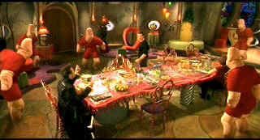

| Spy
Kids/B+, A |
| Dimension/2000/88/ANA 1.85 |
Spy Kids is delightful.
The first half of the film is so engagingly inventive that the pace almost has to slow
considerably, but writer/director Robert Rodriguez displays great affinity for the material. He
knows kids, he knows what they like and he can translates it into a package that delights adults as
well. The gizmos are terrific, but the characters make or break a story and Rodriguez’s inspired
creation of the spy family is wonderful. Even Rodriguez's villainous creation Floop is pretty good.
What's it all about? Once upon a time there was this guy spy and girl spy who
worked for different organizations, but somehow they got together, fell in love and slipped away
from an active role in the business to bring up a family. They had two kids, Carman (about 12) and
Juni (about 10). Only they really didn't shuck the spy garb completely as their young kids soon
find out. They are pulled back into the game by a
plot to take over world power. When Gregorio Cortez (The name is a nod to the fine Indie film The
Ballad of Gregorio Cortez.) and wife Ingrid rush into action to save the world, Carman and Juni are
forced to dig deep into their genetic heritage to show off what their own spy prowess.
Production design is a joy ride. Futurist work is consistently
entertaining. The array of characters are thoroughly enjoyable, and believe, a Thumb isn't just a
thumb. Rodriguez gets more comic mileage out of his Thumbs than a string of hands end on end from
here to Oz.
Alexa Vega and Daryl Sabara are okay as the Cortez kids, but while they may
be at the center of the adventure, Antonio Banderas and Carla Gugino mom as pop Gregorio and Ingrid
Cortez, along with Alan Cumming as Floop deliver precious performances that keep Spy Kids spinning
at a dizzying 120rpms. Cumming underplays Floop to extraordinary effect. Banderas finds the
right combo of self-mocking machismo and Gugino is a welcome fresh face. Terry Hatcher has a good
hair day as a former Cortez colleague.
Welcome family fun from a director fueled by the joy of filmmaking!
 |
| All Thumbs up! ©Dimension |
The DVD is kaleidoscope of
color, richly saturated, almost as exciting as Willy Wonka’s marvelous variety of sweet treats.
Colors retain their space meticulously. Spy Kids packs enough picture pizzazz for several
DVDs rolled into one. It's consistently bright with excellent contrast range. All the wonderful
production details are sharply defined as is the delight reflected in the eyes of the actors.
The Dolby Digital 5:1surround is thoroughly engaging and exciting with outstanding directionality. Too bad this was not delivered as a special
edition. Probing Rodriguez's fertile imagination would have made a great audio commentary.
|
|
|
|

A new Films on Disc space dedicated to purging accumulated home
theater angst and other movie related frustrations, with a measure of praise to balance the
vitriol. The first column takes on:
Inserts and the Pop-Up Window

Truman Show/A,A-
Powered by the consummate taste and directing perfection of Peter Weir. Jim Carrey gives a
marvelous performance. Not to be missed!

 Have you visited Home Theater
Talk lately? One of the friendliest places on the Net for Home Theater and DVD discussion, you
can get help for installation problems or simply share your opinions with other Vidiots. Have you visited Home Theater
Talk lately? One of the friendliest places on the Net for Home Theater and DVD discussion, you
can get help for installation problems or simply share your opinions with other Vidiots.

The AV
Science Forum provides great feedback on the latest home theater equipment with a wide range of
opinions. Outstanding home theater resource.

An on-line Home Theater magazine with excellent hardware reviews,
including thorough and responsible research. Check it out.

Selections from the Feature Archive
include articles on
Akira Kurosawa, Frank
Darabont, Blonde Bimbos, Hollywood
Street Gangs, or Vietnam: The
Hollywood Pariah, and many more....
Robert A. Harris
Tilting at Hollywood
He's part of the dynamic duo that restored Lawrence of Arabia, Spartacus, My Fair Lady and Vertigo.
Harris rides a white horse into the for the cause of preserving our film legacy. Click on the image
to read more.
|